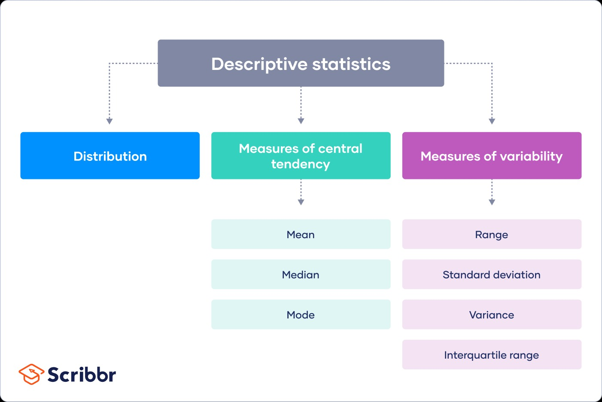

Skip to main content
Introduction to Communication and Media Research with R
Show table of contents
Table of contents
1
Introduction
2
Research Ethics
3
Research Papers
4
Communication Theories
5
Interviews
6
Focus Groups
7
Ethnography
8
Qualitative Content Analysis
9
Quantitative Content Analysis
10
Surveys
11
Experiment
12
Introduction to R
13
Working with Data
14
Visuals
15
Analyses
16
Appendix
15
Analyses
fill
15.1
Descriptive Statistics

Distribution
fill
Simple
fill
Grouped
fill
Central Tendency
fill
Mean
fill
Median
fill
Mode
fill
Variability
fill
Range Standard Deviation Variance
fill
15.2
Inferential Statistics
fill
t-tests
fill
ANOVAs
fill
Regressions
fill
14
Visuals
16
Appendix
On this page
15
Analyses
15.1
Descriptive Statistics
Distribution
Central Tendency
Variability
15.2
Inferential Statistics
t-tests
ANOVAs
Regressions